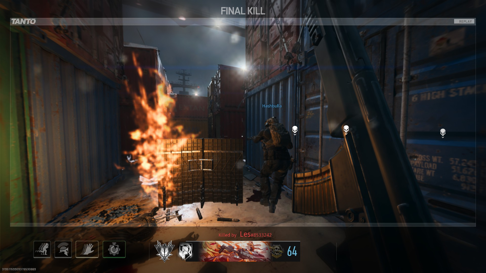
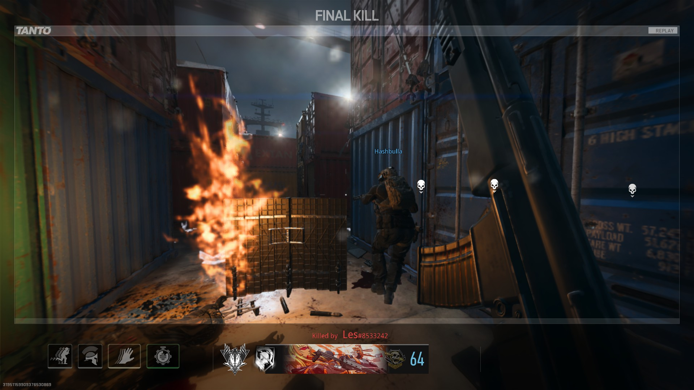

Hi, I'm Patrick John Caalam~
I am an aspiring programmer and a computer enthusiast, Born in February 2004 - as a child I've immediately found my passion with computers as I am fond and comfortable with them. I am currently studying "Bachelor of Science in Computer Science [BSCS]" in my first year.
Accounts

 

Favorites
One of My Favorite things to do is to play Video Games, I usually play most of the genres but I am mostly fond of "Sandbox", "Strategy", "Role-Playing", and "First-Person Shooter". One of my favorite games is Stardew Valley, Fallout, Battlefield and many more.
Also, I like writing some stories. The genres that I usually write are "Science-Fiction", "Post Apocalyptic", and "Slice-of Life". I do not publish any of my works on the Internet or anything, I just want to write some stories that I could think of and let some of my friends read it.
Friends
Lorenzo Llamanzares
Lorenzo "Lopao" Llamanzares is one of my friends that I've met during 2018, We've met in a Local Computer Cafe as one of my colleagues invited him also and we've played a couple of games, We really don't know each other at that time but the next thing we realized is that we already became friends. We played at the local computer cafe alongside with our other friends for years until the Pandemic came along.

Lorenzo Dela Torre
Lorenzo "Enchong" Dela Torre is also one of my friends that I've met during 2018, He was one of Lopao's friends that I've met during that time. As with lopao, we played at the computer cafe for years until the pandemic came along. Since both of them have Lorenzos at their name, They've been dubbed as Black (Enchong) and White (Lopao) by our friends.
Photos
This was during our "Overnight" at Mineski Regalado. Me and Emmanuel was asleep and they took this picture for fun.
I've took this picture during our Day 2 in Quezon Province when we are trekking to go to Alitap Falls. It was so breathtaking I couldn't resist picturing